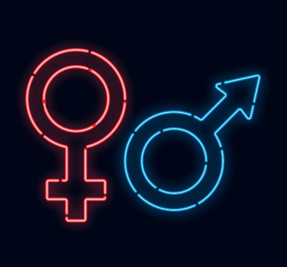

Your Venus sign shows how you express and feel love in friendships and relationships. Venus is represented by women. Your Mars sign is how you assert yourself in various situations. Mars is represented by men. The gender representation is why the symbols for venus and Mars are the symbols for man and women. Since Venus and Mars rotate slower than the Moon and Mercury, a sign will stay in them for longer. I've noticed that people born from September 2002 - January 2003 all have Scorpio Venuses because Venus stayed in Scorpio for awhile.
Venus & Mars Signs
